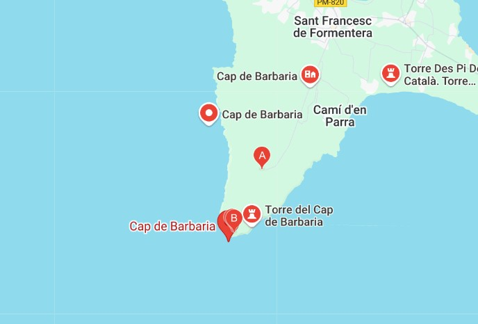

Descripció
Complex funerari d’època prehistòrica amb restes de diversos individus i objectes ceràmics.
Ubicació
és un cap de l'illa de Formentera, envoltat per una vénda que porta el mateix nom.

Complex funerari d’època prehistòrica amb restes de diversos individus i objectes ceràmics.
és un cap de l'illa de Formentera, envoltat per una vénda que porta el mateix nom.